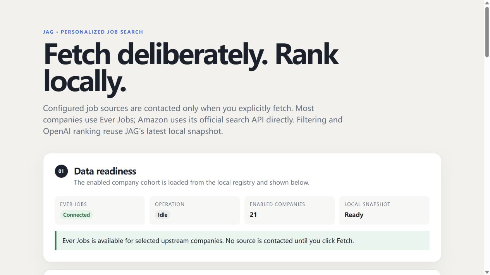
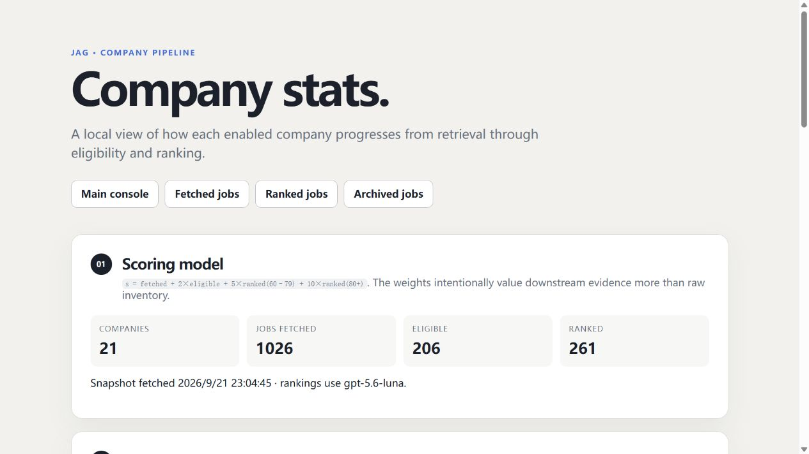
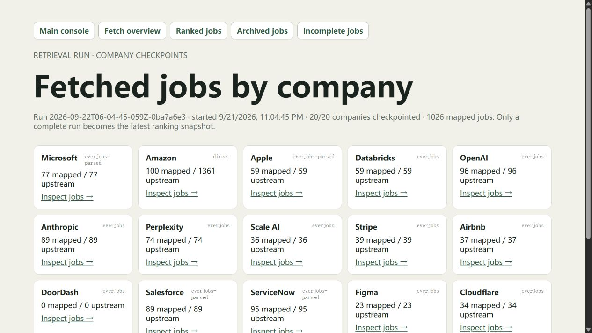
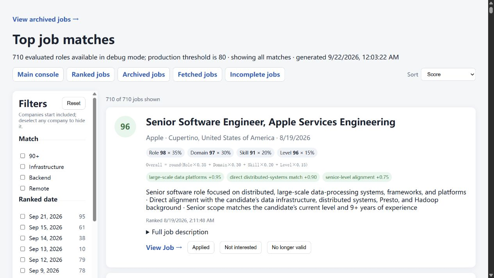

- Visible boundaries. Source retrieval, eligibility, model evaluation, and review remain independently inspectable.
- Incremental model work. Reuse rankings unless re-ranking is requested, avoiding repeated spending on decisions already made.
- Local-first state. Source data, rankings, and review actions remain inspectable files.
- Human decisions. The ranker supports discovery and review; it does not log into career sites or submit applications.
Project showcase / Closed source, live
Job Posting Ranker
A transparent job-post filtering and ranking system with inspectable retrieval, eligibility, and evaluation stages.
Which current engineering openings are worth a particular candidate’s attention? The ranker combines company-scoped job collection, deterministic eligibility rules, and structured LLM evaluation to turn a noisy inventory into a manageable shortlist.
Deliberate retrieval
The operator chooses which companies to fetch. Source readiness, selected companies, snapshot status, and pending ranking work stay visible in the console. Fetching, filtering, and ranking are separate actions, so a prompt experiment never triggers an accidental source refresh.

An inspectable pipeline
Jobs move through fetched, normalized, eligible, ranked, and optionally archived stages. Company statistics show the whole funnel, making it easier to distinguish a large inventory from a source that produces useful matches.

Each company’s retrieval is checkpointed independently, with record counts and processing provenance. A failed company does not erase its previous usable snapshot; only a fully completed selected batch becomes the latest ranking input.

Ranking with explicit evidence
Deterministic rules first exclude unsuitable roles based on freshness, location, role family, and missing essential details. The model then evaluates role, domain, skill, and level fit against a canonical candidate profile. The ranker combines those dimensions with fixed weights and applies guards for strong location or experience contradictions.
The report exposes score dimensions and positive or negative factors alongside company and date filters, sorting, and official posting links. Applied, Not interested, and No longer valid actions archive a job while retaining its evaluation. Archived jobs are excluded from future ranking.

Engineering choices
Screenshots show a real local snapshot. Counts and job examples change as sources are refreshed and decisions are recorded.